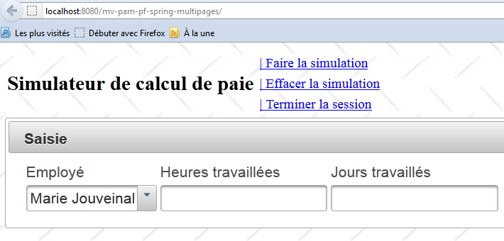
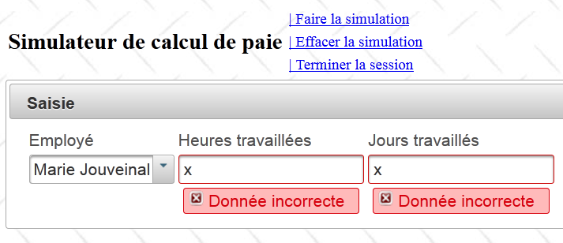
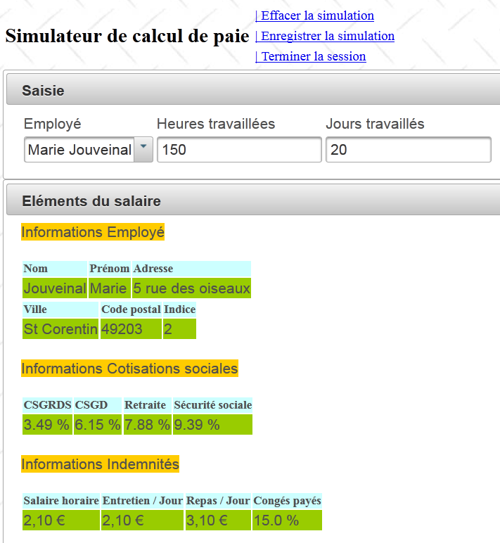
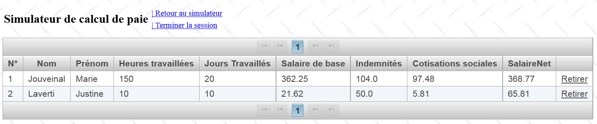
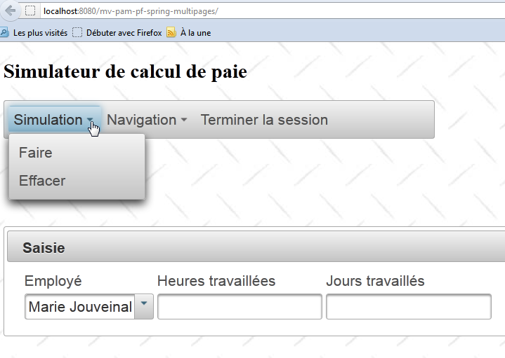

14. الإصدار 9: تنفيذ طبقة الويب باستخدام Primefaces
المتطلبات المسبقة: اقرأ "مقدمة إلى Primefaces" في [ref3].
السؤال 1: إنشاء مشروع Maven جديد من النوع [Web Application] حيث يتم إنشاء صفحات XHTML من المثال السابق باستخدام مكونات Primefaces. لن يتم تغيير أي شيء في الفاصوليا.
تستخدم الصفحة الرئيسية المكونات <p:panel> و<p:inputText> و<p:selectOneMenu> و<p:message>:
 |
إدخال خاطئ:
 |
محاكاة:
 |
تستخدم قائمة المحاكاة المكونات <p:dataTable> و<p:commandLink>:
 |
ستقوم طرق AJAX بتحديث المنطقة id='formulaire' التي تشمل الصفحة بأكملها (انظر السطر 11 أدناه):
<?xml version='1.0' encoding='UTF-8' ?>
<!DOCTYPE html PUBLIC "-//W3C//DTD XHTML 1.0 Transitional//EN" "http://www.w3.org/TR/xhtml1/DTD/xhtml1-transitional.dtd">
<html xmlns="http://www.w3.org/1999/xhtml"
xmlns:h="http://java.sun.com/jsf/html"
xmlns:f="http://java.sun.com/jsf/core"
xmlns:ui="http://java.sun.com/jsf/facelets">
<f:view locale="#{sessionData.locale}">
...
<h:body style="background-image: url('${request.contextPath}/resources/images/standard.jpg');">
<h:form id="formulaire">
<!-- entete -->
<ui:include src="entete.xhtml" />
<!-- contenu -->
<ui:insert name="part1" >
Gestion des assistantes maternelles
</ui:insert>
<ui:insert name="part2"/>
</h:form>
</h:body>
</f:view>
</html>
بمجرد أن يبدأ تطبيقك في العمل، استبدل الصفحة [entete.xhtml] بالصفحة التالية:
<?xml version='1.0' encoding='UTF-8' ?>
<!DOCTYPE html PUBLIC "-//W3C//DTD XHTML 1.0 Transitional//EN" "http://www.w3.org/TR/xhtml1/DTD/xhtml1-transitional.dtd">
<html xmlns="http://www.w3.org/1999/xhtml"
xmlns:h="http://java.sun.com/jsf/html"
xmlns:p="http://primefaces.org/ui"
xmlns:f="http://java.sun.com/jsf/core"
xmlns:ui="http://java.sun.com/jsf/facelets">
<!-- entete -->
<h:panelGroup>
<h2><h:outputText value="#{msg['form.titre']}"/></h2>
</h:panelGroup>
<p:menubar id="menu" header="Menu" style="width: 500px">
<p:submenu label="#{msg['form.menu.simulation']}">
<p:menuitem id="cmdFaireSimulation" style="width: 200px" value="#{msg['form.menu.faireSimulation']}" actionListener="#{form.faireSimulation}" rendered="#{sessionData.menu.faireSimulation}" update=":formulaire:contenu"/>
<p:menuitem id="cmdEffacerSimulation" style="width: 200px" onclick="raz();" immediate="true" value="#{msg['form.menu.effacerSimulation']}" actionListener="#{form.effacerSimulation}" rendered="#{sessionData.menu.effacerSimulation}" update=":formulaire:contenu"/>
<p:menuitem id="cmdEnregistrerSimulation" style="width: 200px" immediate="true" value="#{msg['form.menu.enregistrerSimulation']}" actionListener="#{form.enregistrerSimulation}" rendered="#{sessionData.menu.enregistrerSimulation}" update=":formulaire:contenu"/>
</p:submenu>
<p:submenu label="Navigation">
<p:menuitem id="cmdRetourSimulateur" style="width: 200px" immediate="true" value="#{msg['form.menu.retourSimulateur']}" actionListener="#{form.retourSimulateur}" rendered="#{sessionData.menu.retourSimulateur}" update=":formulaire:contenu"/>
<p:menuitem id="cmdVoirSimulations" style="width: 200px" immediate="true" value="#{msg['form.menu.voirSimulations']}" actionListener="#{form.voirSimulations}" rendered="#{sessionData.menu.voirSimulations}" update=":formulaire:contenu"/>
</p:submenu>
<p:menuitem id="cmdTerminerSession" immediate="true" value="#{msg['form.menu.terminerSession']}" actionListener="#{form.terminerSession}" rendered="#{sessionData.menu.terminerSession}" update=":formulaire:contenu"/>
</p:menubar>
<p:spacer height="50px"/>
</html>
- السطر 15: شريط قوائم Primefaces،
- السطر 16: خيار قائمة في هذا الشريط،
- السطر 17: عنصر من خيار القائمة هذا.
لا يتأثر النموذج بهذا التغيير. العرض الجديد هو كما يلي:

يدعم QZXW2HTMLCUk1JLUlJT1AZQX.
QZXW2HTMLCMT000425ZQX QZXW2HTMLCd3d3LnNwcmluZ2ZyYW1ld29yay5vcmcZQX/schema/beans
QZXW2HTMLCMT000426ZQX QZXW2HTMLCd3d3LnNwcmluZ2ZyYW1ld29yay5vcmcZQX/schema/beans/QZXW2HTMLCc3ByaW5nLWJlYW5zLTIuMC54c2QZQX
QZXW2HTMLCMT000427ZQX QZXW2HTMLCd3d3LnNwcmluZ2ZyYW1ld29yay5vcmcZQX/schema/tx
QZXW2HTMLCMT000428ZQX QZXW2HTMLCd3d3LnNwcmluZ2ZyYW1ld29yay5vcmcZQX/schema/tx/QZXW2HTMLCc3ByaW5nLXR4LTIuMC54c2QZQX
QZXW2HTMLCMT000429ZQX QZXW2HTMLCd3d3LnNwcmluZ2ZyYW1ld29yay5vcmcZQX/schema/jee
QZXW2HTMLCMT000430ZQX QZXW2HTMLCd3d3LnNwcmluZ2ZyYW1ld29yay5vcmcZQX/schema/jee/QZXW2HTMLCc3ByaW5nLWplZS0yLjAueHNkZQX">
QZXW2HTMLCMT000431ZQX المهنة
QZXW2HTMLCMT000432ZQX حسناً - يمكننا طلب كشف الراتب
QZXW2HTMLCMT000433ZQX تجسيد الطبقة QZXW2HTMLBW21ldGllcl0ZQX
QZXW2HTMLCMT000434ZQX حساب كشف الراتب
QZXW2HTMLCMT000435ZQX مراجع حول الطبقات QZXW2HTMLBW0RBT10ZQX
QZXW2HTMLCMT000436ZQX الحصول على كشف الراتب
QZXW2HTMLCMT000437ZQX قائمة الموظفين
QZXW2HTMLCMT000438ZQX مهم - لا توجد أدوات الحصول والتعيين لـ QZXW2HTMLCRUpCZQX
QZXW2HTMLCMT000439ZQX لا بأس - يمكن طلب كشف الراتب
QZXW2HTMLCMT000440ZQX إنشاء مثيل الطبقة QZXW2HTMLBW21ldGllcl0ZQX
QZXW2HTMLCMT000441ZQX حساب كشف الراتب
QZXW2HTMLCMT000442ZQX سلسلة الاستثناءات
QZXW2HTMLCMT000443ZQX العرض السريع
QZXW2HTMLCMT000444ZQX Apache QZXW2HTMLCQ1hGZQX التبعيات
QZXW2HTMLCMT000445ZQX تكوين QZXW2HTMLCQ1hGZQX
QZXW2HTMLCMT000446ZQX </url-pattern>
QZXW2HTMLCMT000447ZQX طبقة الأعمال
QZXW2HTMLCMT000448ZQX المنشئ
QZXW2HTMLCMT000449ZQX أدوات الاسترجاع والتعيين
QZXW2HTMLCMT000450ZQX QZXW2HTMLCd3d3LnNwcmluZ2ZyYW1ld29yay5vcmcZQX/schema/beans/QZXW2HTMLCc3ByaW5nLWJlYW5zLTIuMC54c2QZQX
QZXW2HTMLCMT000451ZQX QZXW2HTMLCd3d3LnNwcmluZ2ZyYW1ld29yay5vcmcZQX/schema/tx
QZXW2HTMLCMT000452ZQX QZXW2HTMLCd3d3LnNwcmluZ2ZyYW1ld29yay5vcmcZQX/schema/tx/QZXW2HTMLCc3ByaW5nLXR4LTIuMC54c2QZQX
QZXW2HTMLCMT000453ZQX QZXW2HTMLCY3hmLmFwYWNoZS5vcmcZQX/jaxws
QZXW2HTMLCMT000454ZQX QZXW2HTMLCY3hmLmFwYWNoZS5vcmcZQX/schemas/QZXW2HTMLCamF4d3MueHNkZQX">
QZXW2HTMLCMT000455ZQX Apache QZXW2HTMLCQ1hGZQX
QZXW2HTMLCMT000456ZQX الطبقات السفلية
QZXW2HTMLCMT000457ZQX خدمة الويب
QZXW2HTMLCMT000458ZQX </url-pattern>
QZXW2HTMLCMT000459ZQX =========== QZXW2HTMLCRlVMTAZQX QZXW2HTMLCQ09ORklHVVJBVElPTgZQX QZXW2HTMLCRklMRQZQX ==================================
QZXW2HTMLCMT000460ZQX ccffff;
QZXW2HTMLCMT000461ZQX ffccff
QZXW2HTMLCMT000462ZQX ff3333
QZXW2HTMLCMT000463ZQX 99cc00
QZXW2HTMLCMT000464ZQX ffcc00
QZXW2HTMLCMT000465ZQX اللغة المحلية للصفحات
QZXW2HTMLCMT000466ZQX الحصول على كشف الراتب
QZXW2HTMLCMT000467ZQX قائمة الموظفين
QZXW2HTMLCMT000468ZQX قاموس الموظفين المفهرس حسب الرقم QZXW2HTMLCU1MZQX
QZXW2HTMLCMT000469ZQX قائمة الموظفين
QZXW2HTMLCMT000470ZQX الحصول على كشف الراتب
QZXW2HTMLCMT000471ZQX استرداد الموظف رقم QZXW2HTMLCU1MZQX
QZXW2HTMLCMT000472ZQX إصدار كشف راتب وهمي
QZXW2HTMLCMT000473ZQX قائمة الموظفين
QZXW2HTMLCMT000474ZQX إنشاء قائمة تضم موظفين اثنين
QZXW2HTMLCMT000475ZQX قاموس الموظفين المفهرس برقم QZXW2HTMLCU1MZQX
QZXW2HTMLCMT000476ZQX عرض قائمة الموظفين
QZXW2HTMLCMT000477ZQX طبقة الأعمال
QZXW2HTMLCMT000478ZQX حقول النموذج
QZXW2HTMLCMT000479ZQX طبقة الأعمال
QZXW2HTMLCMT000480ZQX حقول النموذج
QZXW2HTMLCMT000481ZQX ff6633;
QZXW2HTMLCMT000482ZQX ffcc66;
QZXW2HTMLCMT000483ZQX ffcc99;
QZXW2HTMLCMT000484ZQX قائمة الموظفين
QZXW2HTMLCMT000485ZQX الحصول على كشف الراتب
QZXW2HTMLCMT000486ZQX استرداد الموظف
QZXW2HTMLCMT000487ZQX إرجاع استثناء إذا كان الموظف غير موجود
QZXW2HTMLCMT000488ZQX إرجاع كشف راتب وهمي
QZXW2HTMLCMT000489ZQX قائمة الموظفين
QZXW2HTMLCMT000490ZQX يتم إنشاء قائمة بثلاثة موظفين
QZXW2HTMLCMT000491ZQX قائمة الموظفين
QZXW2HTMLCMT000492ZQX إضافة موظف غير موجود في القاموس
QZXW2HTMLCMT000493ZQX عرض قائمة الموظفين
QZXW2HTMLCMT000494ZQX طبقة الأعمال
QZXW2HTMLCMT000495ZQX مسجل
QZXW2HTMLCMT000496ZQX سجل
QZXW2HTMLCMT000497ZQX مُستردات ومُعيّنات
QZXW2HTMLCMT000498ZQX التطبيق
QZXW2HTMLCMT000499ZQX المحاكاة
QZXW2HTMLCMT000500ZQX قوائم
QZXW2HTMLCMT000501ZQX الإعدادات المحلية
QZXW2HTMLCMT000502ZQX المنشئ
QZXW2HTMLCMT000503ZQX سجل
QZXW2HTMLCMT000504ZQX إدارة القوائم
QZXW2HTMLCMT000505ZQX مُستردات ومُعيّنات
QZXW2HTMLCMT000506ZQX حبوب أخرى
QZXW2HTMLCMT000507ZQX نموذج العروض
QZXW2HTMLCMT000508ZQX قائمة الموظفين
QZXW2HTMLCMT000509ZQX إجراء القائمة
QZXW2HTMLCMT000510ZQX الوصول والضبط
QZXW2HTMLCMT000511ZQX تغيير القيم المرسلة
QZXW2HTMLCMT000512ZQX رأس الصفحة
QZXW2HTMLCMT000513ZQX المحتوى
QZXW2HTMLCMT000514ZQX رأس الصفحة
QZXW2HTMLCMT000515ZQX إجراء القائمة
QZXW2HTMLCMT000516ZQX يتم حساب كشف الراتب
QZXW2HTMLCMT000517ZQX عرض المحاكاة
QZXW2HTMLCMT000518ZQX يتم تحديث القائمة
QZXW2HTMLCMT000519ZQX عرض عرض المحاكاة
QZXW2HTMLCMT000520ZQX إفراغ قائمة الأخطاء السابقة
QZXW2HTMLCMT000521ZQX يتم إنشاء قائمة الأخطاء الجديدة
QZXW2HTMLCMT000522ZQX عرض العرض QZXW2HTMLCdnVlRXJyZXVyZQX
QZXW2HTMLCMT000523ZQX تحديث القائمة
QZXW2HTMLCMT000524ZQX عرض عرض الأخطاء
QZXW2HTMLCMT000525ZQX نموذج العروض
QZXW2HTMLCMT000526ZQX الحقل
QZXW2HTMLCMT000527ZQX المنشئ
QZXW2HTMLCMT000528ZQX مُستردات ومُعيّنات
QZXW2HTMLCMT000529ZQX يتم استرداد الموظف
QZXW2HTMLCMT000530ZQX إرجاع استثناء إذا كان الموظف غير موجود
QZXW2HTMLCMT000531ZQX تغيير القيم المرسلة
QZXW2HTMLCMT000532ZQX نموذج العروض
QZXW2HTMLCMT000533ZQX حقول محاكاة
QZXW2HTMLCMT000534ZQX منشئ
QZXW2HTMLCMT000535ZQX مُستردات ومُعيّنات
QZXW2HTMLCMT000536ZQX المحاكاة
QZXW2HTMLCMT000537ZQX جدول المحاكاة
QZXW2HTMLCMT000538ZQX المحاكاة
QZXW2HTMLCMT000539ZQX نموذج العروض
QZXW2HTMLCMT000540ZQX رأس الصفحة
QZXW2HTMLCMT000541ZQX المحتوى
QZXW2HTMLCMT000542ZQX رأس الصفحة